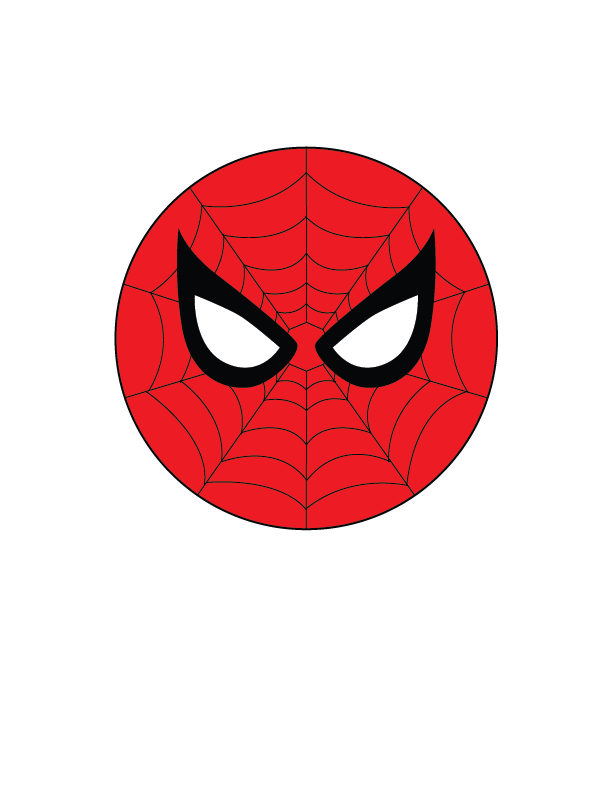
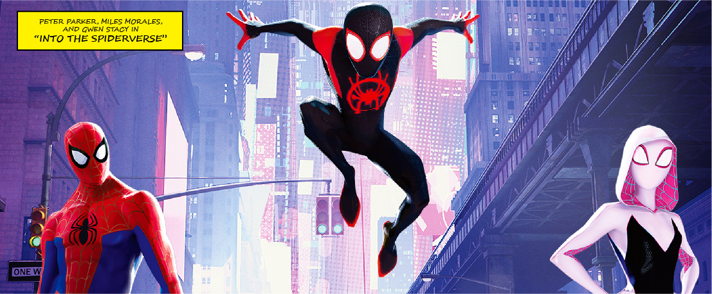

SPIDER-VERSE
SPIDER-MAN MADE HIS DEBUT IN 1962’S AMAZING FANTASY #15. CHARACTERS LIKE THOR, IRON MAN, AND CAPTAIN AMERICA HAD TO WAIT YEARS BEFORE THEY HAD THEIR OWN COMIC NAMED AFTER THEM, BUT SPIDER-MAN RECEIVED HIS SOLO COMIC, “THE AMAZING SPIDER-MAN”, LESS THAN A YEAR LATER IN EARLY 1963.
SPIDER-MAN’S PETER PARKER HAS HAD A MULTITUDE OF COMIC RUNS SINCE THEN, INCLUDING A DIFFERENT UNIVERSE WHERE HE PASSES THE TORCH (TO MILES MORALES IN THE ULTIMATE MARVEL) AND A VERSION OF GWEN STACY WHO GAINED POWERS INSTEAD OF PETER (INTRODUCED IN THE 2014-2015 SPIDER-VERSE STORYLINE). EACH ONE HAS THEIR OWN UNIQUE SUIT AND LOGO TO FURTHER DIFFERENTIATE THEMSELVES.
GREEN GOBLIN, KINGPIN, AND DOC OCK ARE JUST A FEW OF THE VILLAINS WHO HAVE POSED A THREAT TO THE SPIDER-PEOPLE. THEIR BACKGROUNDS MIGHT DIFFER DEPENDING ON THE UNIVERSE, BUT JUST LIKE THEIR SPIDER-PEOPLE COUNTERPARTS, THEY HAVE SIMILAR POWERS AND TECH THAT MAKE THE IMMEDIATELY RECOGNIZABLE.
THE POPULARITY OF THE SPIDER-VERSE COMIC STORYLINE INSPIRED OTHER MEDIUMS. THE STORY HAS BEEN REFERENCED IN CARTOONS, THE PS4 “SPIDER-MAN” VIDEOGAME, AND IN THE 2018 HIT ANIMATED MOVIE, “INTO THE SPIDER-VERSE”. RUMORS IN FALL OF 2020 INDICATE THAT THE NEXT SPIDER-MAN MOVIE FEATURING TOM HOLLAND WILL INTRODUCE THE SPIDER-VERSE TO THE MCU.
IT’S SAFE TO SAY THAT THE SPIDER-VERSE HAS SOMETHING FOR EVERYONE.
